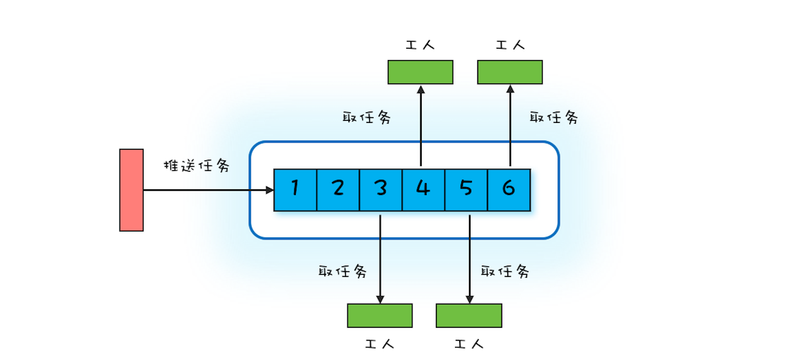
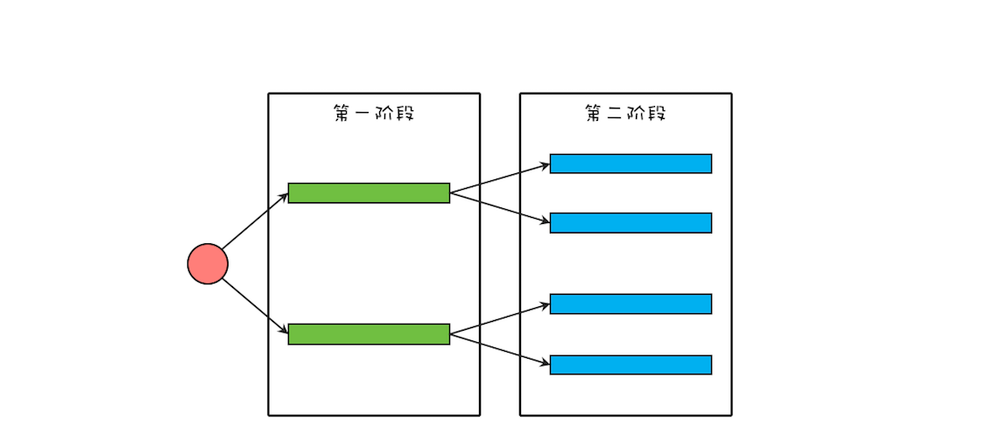
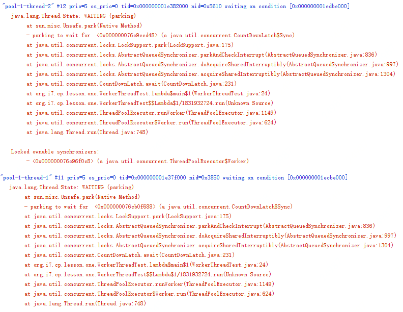

- 00 学习攻略 如何才能学好并发编程？.md
- 00 开篇词 你为什么需要学习并发编程？.md
- 01 可见性、原子性和有序性问题：并发编程Bug的源头.md
- 02 Java内存模型：看Java如何解决可见性和有序性问题.md
- 03 互斥锁（上）：解决原子性问题.md
- 04 互斥锁（下）：如何用一把锁保护多个资源？.md
- 05 一不小心就死锁了，怎么办？.md
- 06 用“等待-通知”机制优化循环等待.md
- 07 安全性、活跃性以及性能问题.md
- 08 管程：并发编程的万能钥匙.md
- 09 Java线程（上）：Java线程的生命周期.md
- 10 Java线程（中）：创建多少线程才是合适的？.md
- 11 Java线程（下）：为什么局部变量是线程安全的？.md
- 12 如何用面向对象思想写好并发程序？.md
- 13 理论基础模块热点问题答疑.md
- 14 Lock和Condition（上）：隐藏在并发包中的管程.md
- 15 Lock和Condition（下）：Dubbo如何用管程实现异步转同步？.md
- 16 Semaphore：如何快速实现一个限流器？.md
- 17 ReadWriteLock：如何快速实现一个完备的缓存？.md
- 18 StampedLock：有没有比读写锁更快的锁？.md
- 19 CountDownLatch和CyclicBarrier：如何让多线程步调一致？.md
- 20 并发容器：都有哪些“坑”需要我们填？.md
- 21 原子类：无锁工具类的典范.md
- 22 Executor与线程池：如何创建正确的线程池？.md
- 23 Future：如何用多线程实现最优的“烧水泡茶”程序？.md
- 24 CompletableFuture：异步编程没那么难.md
- 25 CompletionService：如何批量执行异步任务？.md
- 26 Fork_Join：单机版的MapReduce.md
- 27 并发工具类模块热点问题答疑.md
- 28 Immutability模式：如何利用不变性解决并发问题？.md
- 29 Copy-on-Write模式：不是延时策略的COW.md
- 3 个用户来信 打开一个新的并发世界.md
- 30 线程本地存储模式：没有共享，就没有伤害.md
- 31 Guarded Suspension模式：等待唤醒机制的规范实现.md
- 32 Balking模式：再谈线程安全的单例模式.md
- 33 Thread-Per-Message模式：最简单实用的分工方法.md
- 34 Worker Thread模式：如何避免重复创建线程？.md
- 35 两阶段终止模式：如何优雅地终止线程？.md
- 36 生产者-消费者模式：用流水线思想提高效率.md
- 37 设计模式模块热点问题答疑.md
- 38 案例分析（一）：高性能限流器Guava RateLimiter.md
- 39 案例分析（二）：高性能网络应用框架Netty.md
- 40 案例分析（三）：高性能队列Disruptor.md
- 41 案例分析（四）：高性能数据库连接池HiKariCP.md
- 42 Actor模型：面向对象原生的并发模型.md
- 43 软件事务内存：借鉴数据库的并发经验.md
- 44 协程：更轻量级的线程.md
- 45 CSP模型：Golang的主力队员.md
- 用户来信 真好，面试考到这些并发编程，我都答对了！.md
- 结束语 十年之后，初心依旧.md
34 Worker Thread模式：如何避免重复创建线程？
在上一篇文章中，我们介绍了一种最简单的分工模式——Thread-Per-Message模式，对应到现实世界，其实就是委托代办。这种分工模式如果用Java Thread实现，频繁地创建、销毁线程非常影响性能，同时无限制地创建线程还可能导致OOM，所以在Java领域使用场景就受限了。
要想有效避免线程的频繁创建、销毁以及OOM问题，就不得不提今天我们要细聊的，也是Java领域使用最多的Worker Thread模式。
Worker Thread模式及其实现
Worker Thread模式可以类比现实世界里车间的工作模式：车间里的工人，有活儿了，大家一起干，没活儿了就聊聊天等着。你可以参考下面的示意图来理解，Worker Thread模式中Worker Thread对应到现实世界里，其实指的就是车间里的工人。不过这里需要注意的是，车间里的工人数量往往是确定的。

车间工作示意图
那在编程领域该如何模拟车间的这种工作模式呢？或者说如何去实现Worker Thread模式呢？通过上面的图，你很容易就能想到用阻塞队列做任务池，然后创建固定数量的线程消费阻塞队列中的任务。其实你仔细想会发现，这个方案就是Java语言提供的线程池。
线程池有很多优点，例如能够避免重复创建、销毁线程，同时能够限制创建线程的上限等等。学习完上一篇文章后你已经知道，用Java的Thread实现Thread-Per-Message模式难以应对高并发场景，原因就在于频繁创建、销毁Java线程的成本有点高，而且无限制地创建线程还可能导致应用OOM。线程池，则恰好能解决这些问题。
那我们还是以echo程序为例，看看如何用线程池来实现。
下面的示例代码是用线程池实现的echo服务端，相比于Thread-Per-Message模式的实现，改动非常少，仅仅是创建了一个最多线程数为500的线程池es，然后通过es.execute()方法将请求处理的任务提交给线程池处理。
ExecutorService es = Executors
.newFixedThreadPool(500);
final ServerSocketChannel ssc =
ServerSocketChannel.open().bind(
new InetSocketAddress(8080));
//处理请求
try {
while (true) {
// 接收请求
SocketChannel sc = ssc.accept();
// 将请求处理任务提交给线程池
es.execute(()->{
try {
// 读Socket
ByteBuffer rb = ByteBuffer
.allocateDirect(1024);
sc.read(rb);
//模拟处理请求
Thread.sleep(2000);
// 写Socket
ByteBuffer wb =
(ByteBuffer)rb.flip();
sc.write(wb);
// 关闭Socket
sc.close();
}catch(Exception e){
throw new UncheckedIOException(e);
}
});
}
} finally {
ssc.close();
es.shutdown();
}
正确地创建线程池
Java的线程池既能够避免无限制地创建线程导致OOM，也能避免无限制地接收任务导致OOM。只不过后者经常容易被我们忽略，例如在上面的实现中，就被我们忽略了。所以强烈建议你用创建有界的队列来接收任务。
当请求量大于有界队列的容量时，就需要合理地拒绝请求。如何合理地拒绝呢？这需要你结合具体的业务场景来制定，即便线程池默认的拒绝策略能够满足你的需求，也同样建议你在创建线程池时，清晰地指明拒绝策略。
同时，为了便于调试和诊断问题，我也强烈建议你在实际工作中给线程赋予一个业务相关的名字。
综合以上这三点建议，echo程序中创建线程可以使用下面的示例代码。
ExecutorService es = new ThreadPoolExecutor(
50, 500,
60L, TimeUnit.SECONDS,
//注意要创建有界队列
new LinkedBlockingQueue<Runnable>(2000),
//建议根据业务需求实现ThreadFactory
r->{
return new Thread(r, "echo-"+ r.hashCode());
},
//建议根据业务需求实现RejectedExecutionHandler
new ThreadPoolExecutor.CallerRunsPolicy());
避免线程死锁
使用线程池过程中，还要注意一种线程死锁的场景。如果提交到相同线程池的任务不是相互独立的，而是有依赖关系的，那么就有可能导致线程死锁。实际工作中，我就亲历过这种线程死锁的场景。具体现象是应用每运行一段时间偶尔就会处于无响应的状态，监控数据看上去一切都正常，但是实际上已经不能正常工作了。
这个出问题的应用，相关的逻辑精简之后，如下图所示，该应用将一个大型的计算任务分成两个阶段，第一个阶段的任务会等待第二阶段的子任务完成。在这个应用里，每一个阶段都使用了线程池，而且两个阶段使用的还是同一个线程池。

应用业务逻辑示意图
我们可以用下面的示例代码来模拟该应用，如果你执行下面的这段代码，会发现它永远执行不到最后一行。执行过程中没有任何异常，但是应用已经停止响应了。
//L1、L2阶段共用的线程池
ExecutorService es = Executors.
newFixedThreadPool(2);
//L1阶段的闭锁
CountDownLatch l1=new CountDownLatch(2);
for (int i=0; i<2; i++){
System.out.println("L1");
//执行L1阶段任务
es.execute(()->{
//L2阶段的闭锁
CountDownLatch l2=new CountDownLatch(2);
//执行L2阶段子任务
for (int j=0; j<2; j++){
es.execute(()->{
System.out.println("L2");
l2.countDown();
});
}
//等待L2阶段任务执行完
l2.await();
l1.countDown();
});
}
//等着L1阶段任务执行完
l1.await();
System.out.println("end");
当应用出现类似问题时，首选的诊断方法是查看线程栈。下图是上面示例代码停止响应后的线程栈，你会发现线程池中的两个线程全部都阻塞在 l2.await(); 这行代码上了，也就是说，线程池里所有的线程都在等待L2阶段的任务执行完，那L2阶段的子任务什么时候能够执行完呢？永远都没那一天了，为什么呢？因为线程池里的线程都阻塞了，没有空闲的线程执行L2阶段的任务了。

原因找到了，那如何解决就简单了，最简单粗暴的办法就是将线程池的最大线程数调大，如果能够确定任务的数量不是非常多的话，这个办法也是可行的，否则这个办法就行不通了。其实这种问题通用的解决方案是为不同的任务创建不同的线程池。对于上面的这个应用，L1阶段的任务和L2阶段的任务如果各自都有自己的线程池，就不会出现这种问题了。
最后再次强调一下：提交到相同线程池中的任务一定是相互独立的，否则就一定要慎重。
总结
我们曾经说过，解决并发编程里的分工问题，最好的办法是和现实世界做对比。对比现实世界构建编程领域的模型，能够让模型更容易理解。上一篇我们介绍的Thread-Per-Message模式，类似于现实世界里的委托他人办理，而今天介绍的Worker Thread模式则类似于车间里工人的工作模式。如果你在设计阶段，发现对业务模型建模之后，模型非常类似于车间的工作模式，那基本上就能确定可以在实现阶段采用Worker Thread模式来实现。
Worker Thread模式和Thread-Per-Message模式的区别有哪些呢？从现实世界的角度看，你委托代办人做事，往往是和代办人直接沟通的；对应到编程领域，其实现也是主线程直接创建了一个子线程，主子线程之间是可以直接通信的。而车间工人的工作方式则是完全围绕任务展开的，一个具体的任务被哪个工人执行，预先是无法知道的；对应到编程领域，则是主线程提交任务到线程池，但主线程并不关心任务被哪个线程执行。
Worker Thread模式能避免线程频繁创建、销毁的问题，而且能够限制线程的最大数量。Java语言里可以直接使用线程池来实现Worker Thread模式，线程池是一个非常基础和优秀的工具类，甚至有些大厂的编码规范都不允许用new Thread()来创建线程的，必须使用线程池。
不过使用线程池还是需要格外谨慎的，除了今天重点讲到的如何正确创建线程池、如何避免线程死锁问题，还需要注意前面我们曾经提到的ThreadLocal内存泄露问题。同时对于提交到线程池的任务，还要做好异常处理，避免异常的任务从眼前溜走，从业务的角度看，有时没有发现异常的任务后果往往都很严重。
课后思考
小灰同学写了如下的代码，本义是异步地打印字符串“QQ”，请问他的实现是否有问题呢？
ExecutorService pool = Executors
.newSingleThreadExecutor();
pool.submit(() -> {
try {
String qq=pool.submit(()->"QQ").get();
System.out.println(qq);
} catch (Exception e) {
}
});
欢迎在留言区与我分享你的想法，也欢迎你在留言区记录你的思考过程。感谢阅读，如果你觉得这篇文章对你有帮助的话，也欢迎把它分享给更多的朋友。
© 2019 - 2023 Liangliang Lee. Powered by gin and hexo-theme-book.